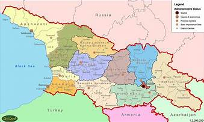
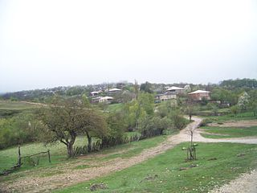

მდებარეობს ჭიათურის პლატოზე. ზღვის დონიდან 840მეტრი,
ჭიათურიდან 24 კილომეტრი.
სოფელში არის სკოლა,
რუკა
- წმინდა გიორგის სახელობის ეკლესია
- წმინდა ნინოს სახელობის ეკლესია
- პირადია
- იძირო
- საწკრიალო
| ბერეთისა — სოფელი ჭიათურის მუნიციპალიტეტში. მდებარეობს ჭიათურის პლატოზე. ზღვის დონიდან 840მეტრი, ჭიათურიდან 24 კილომეტრი. სოფელში არის სკოლა, |
ღირსშესანიშნაობები | |
|  რუკა |
 |
|
| ყველა უფლება დაცულია | ||